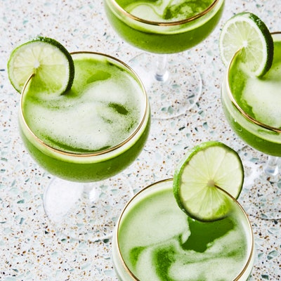

Food

If you're struggling to pick out what to eat look at the different types of food below from all over the world and search for a random recipe!
- Mexican
- American
- Italian
- Chinese
- African
Drinks
If you're thirsty and not sure how to quench your thirst while enjoying adult time look at the different types of spirits and search for a random drink recipe!
- Vokda
- Gin
- Tequila
- Rum
- Whiskey